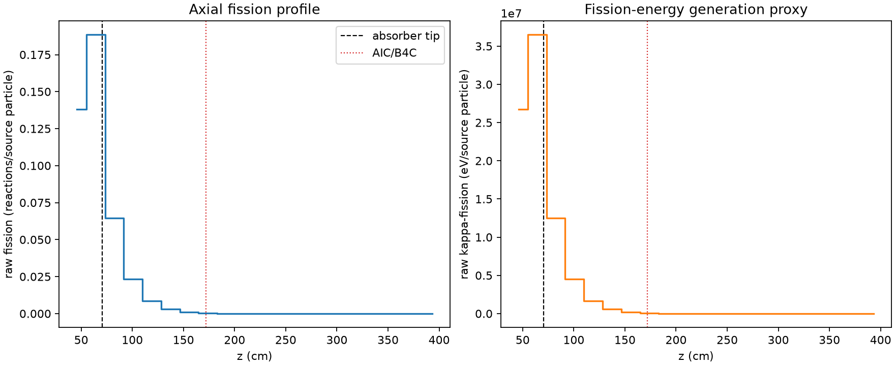
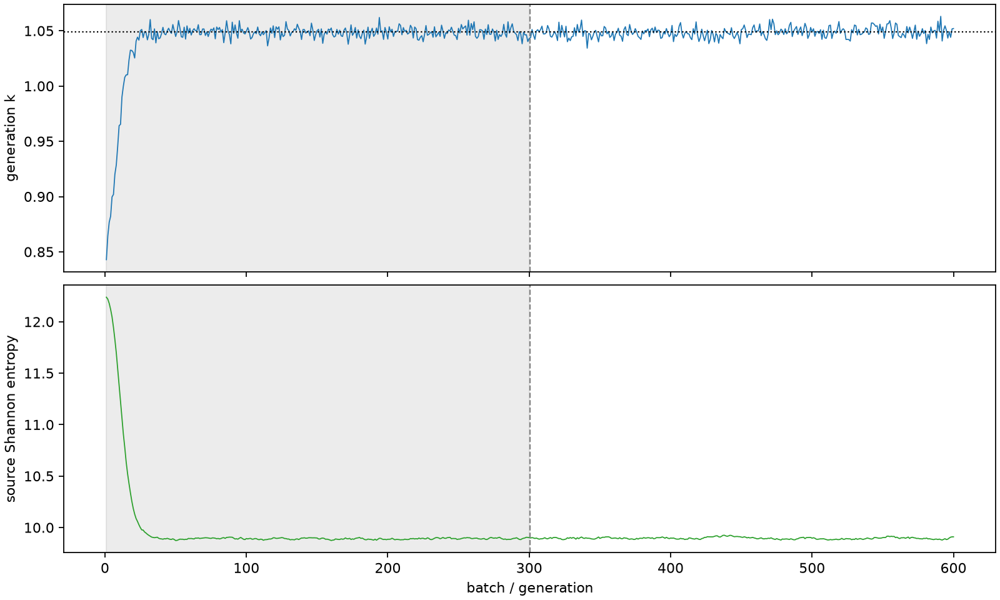

| field | value |
|---|---|
| experiment | V2-STAGE_128_OGRENCI_01-0024 |
| k | 1.0488543926065383 |
| MC standard error | 0.00017501493150219805 |
| seconds | 929.9479105580103 |
| acceptance | not_assessed |
| convergence | review_required |
Completed is output integrity only; physical and statistical review required. Zero tallies do not prove zero production or zero uncertainty.
| diagnostic | value |
|---|---|
| geometric fuel voxels | 5280 |
| zero fission tally voxels | 1801 |
| low signal fuel voxels | 2911 |
| low signal fission share | 0.00011206893669779993 |
| low signal kappa share | 0.00011211691338786755 |
| important fission share | 0.9501302151893453 |
| previous filter included | 2369 |
| duration estimate s | 1562.5173488400023 |
| actual minus estimate s | -632.569438281992 |
| fission relative MC error | statistics |
|---|---|
| all_geometric_fuel | {"voxels": 5280, "positive_mean_voxels": 3479, "zero_mean_voxels": 1801, "undefined_relative_error_voxels": 1801, "median": 0.05084143524914015, "p95": 1.0, "maximum": 1.0000000000000002} |
| low_signal | {"voxels": 2911, "positive_mean_voxels": 1110, "zero_mean_voxels": 1801, "undefined_relative_error_voxels": 1801, "median": 0.5529589303615732, "p95": 1.0, "maximum": 1.0000000000000002} |
| important_95pct | {"voxels": 953, "positive_mean_voxels": 953, "zero_mean_voxels": 0, "undefined_relative_error_voxels": 0, "median": 0.0050464396108067695, "p95": 0.011294136335864376, "maximum": 0.012428477538773202} |
| outside_previous_filter | {"voxels": 2911, "positive_mean_voxels": 1110, "zero_mean_voxels": 1801, "undefined_relative_error_voxels": 1801, "median": 0.5529589303615732, "p95": 1.0, "maximum": 1.0000000000000002} |
| kappa_fission relative MC error | statistics |
|---|---|
| all_geometric_fuel | {"voxels": 5280, "positive_mean_voxels": 3479, "zero_mean_voxels": 1801, "undefined_relative_error_voxels": 1801, "median": 0.05074997920591133, "p95": 1.0, "maximum": 1.0000000000000002} |
| low_signal | {"voxels": 2911, "positive_mean_voxels": 1110, "zero_mean_voxels": 1801, "undefined_relative_error_voxels": 1801, "median": 0.5525288504039401, "p95": 1.0, "maximum": 1.0000000000000002} |
| important_95pct | {"voxels": 953, "positive_mean_voxels": 953, "zero_mean_voxels": 0, "undefined_relative_error_voxels": 0, "median": 0.005040644942933945, "p95": 0.011276765292366688, "maximum": 0.012412199468048214} |
| outside_previous_filter | {"voxels": 2911, "positive_mean_voxels": 1110, "zero_mean_voxels": 1801, "undefined_relative_error_voxels": 1801, "median": 0.5525288504039401, "p95": 1.0, "maximum": 1.0000000000000002} |
| axial bin | fission share | kappa-fission share |
|---|---|---|
| 1 | 0.32285652714330854 | 0.32283810026010595 |
| 2 | 0.4405101031911886 | 0.44047870851544874 |
| 3 | 0.15070206323963967 | 0.1507329372236393 |
| 4 | 0.054753990727609586 | 0.05476596298696965 |
| 5 | 0.020064024192856512 | 0.020068411206861387 |
| 6 | 0.007287082389894768 | 0.0072887327452748 |
| 7 | 0.0026355188632258696 | 0.002636088358843689 |
| 8 | 0.0008399517201282873 | 0.0008401749685978839 |
| 9 | 0.00024543583616648876 | 0.0002455363761553517 |
| 10 | 7.539260331326241e-05 | 7.542521556540383e-05 |
| 11 | 2.4770199668593296e-05 | 2.4779246508120873e-05 |
| 12 | 3.8718299819669975e-06 | 3.873902930286872e-06 |
| 13 | 4.854093440433635e-07 | 4.864905626468379e-07 |
| 14 | 5.613363247197594e-07 | 5.611193416715617e-07 |
| 15 | 2.213173490129272e-07 | 2.213831950226301e-07 |
| 16 | 0.0 | 0.0 |
| 17 | 0.0 | 0.0 |
| 18 | 0.0 | 0.0 |
| 19 | 0.0 | 0.0 |
| 20 | 0.0 | 0.0 |
Histories include the inactive-to-active transition at batch 300. kappa-fission approximates fission energy production, not total heat deposition.

